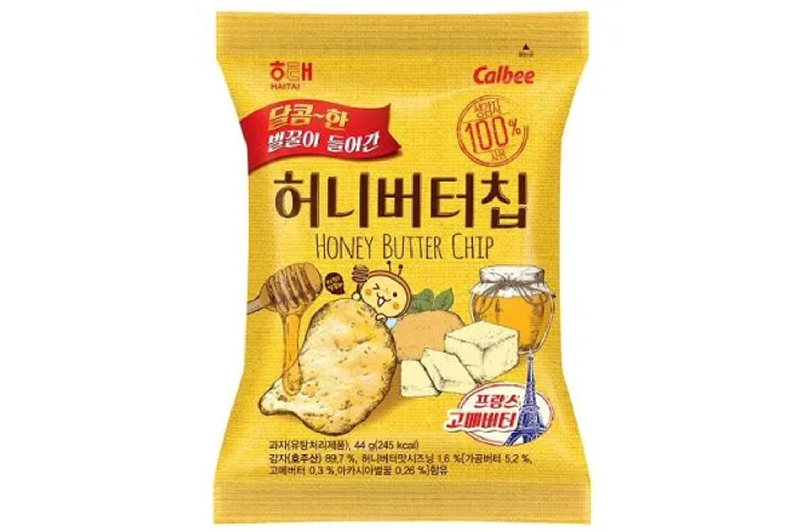

허니버터칩
해태 허니버터칩 — 달콤·고소한 감자칩, 외국인 인기 기념 과자.
허니버터칩은 해태와 일본 칼비(Calbee) 협업의 감자칩으로, 꿀·버터 시즈닝의 단짠 맛이 특징입니다. 2010년대 열풍 이후에도 마트·편의점 정석 선물입니다.
부피가 크고 봉지가 쉽게 터질 수 있어 캐리어 중앙·이중 포장을 권합니다. 시즌·한정 맛도 함께 비교해 보세요.
허니버터칩은 해태와 일본 칼비(Calbee) 협업의 감자칩으로, 꿀·버터 시즈닝의 단짠 맛이 특징입니다. 2010년대 열풍 이후에도 마트·편의점 정석 선물입니다.
부피가 크고 봉지가 쉽게 터질 수 있어 캐리어 중앙·이중 포장을 권합니다. 시즌·한정 맛도 함께 비교해 보세요.
사는 팁
구매 팁 ‘허니버터칩’·해태 표기를 확인하세요. 유사 꿀버터 칩이 많으니 브랜드를 구분하세요.